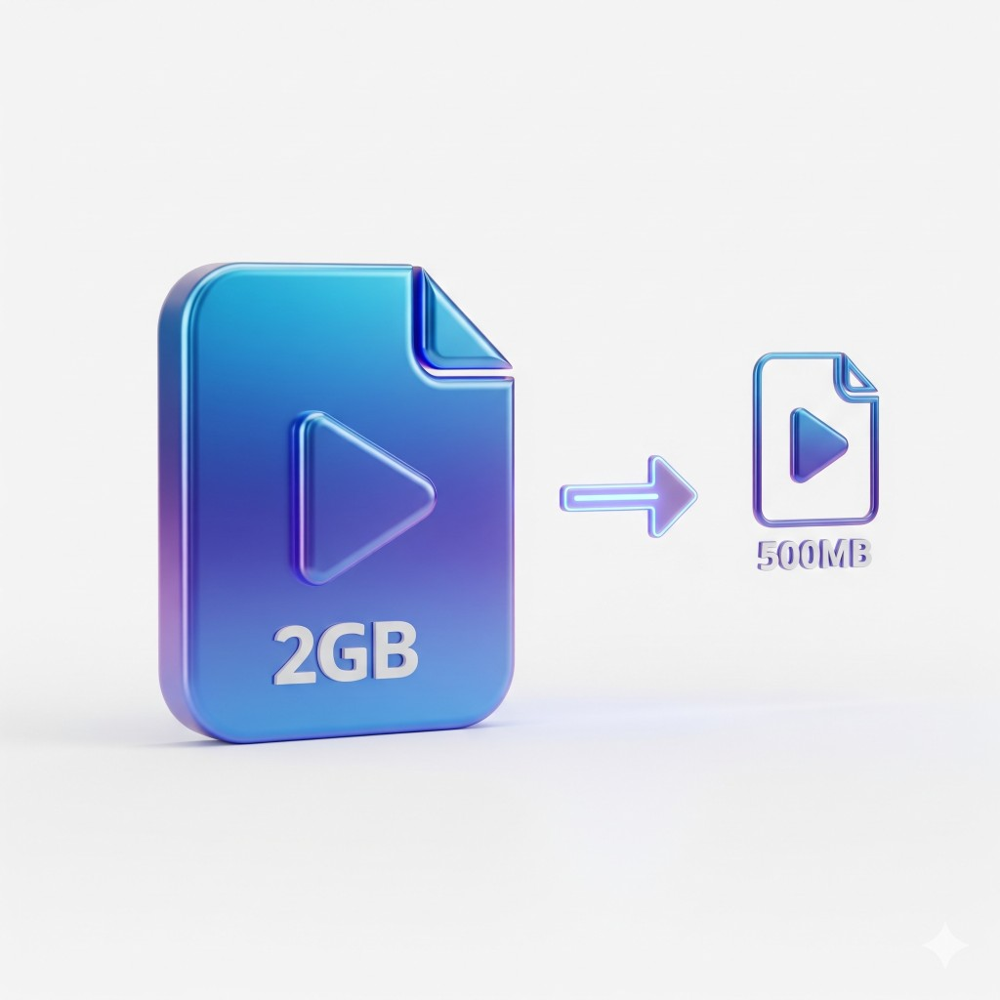
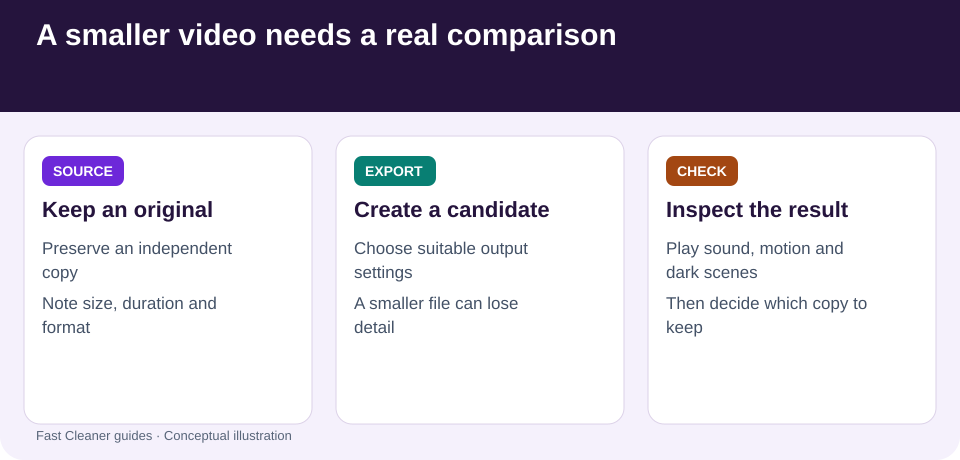
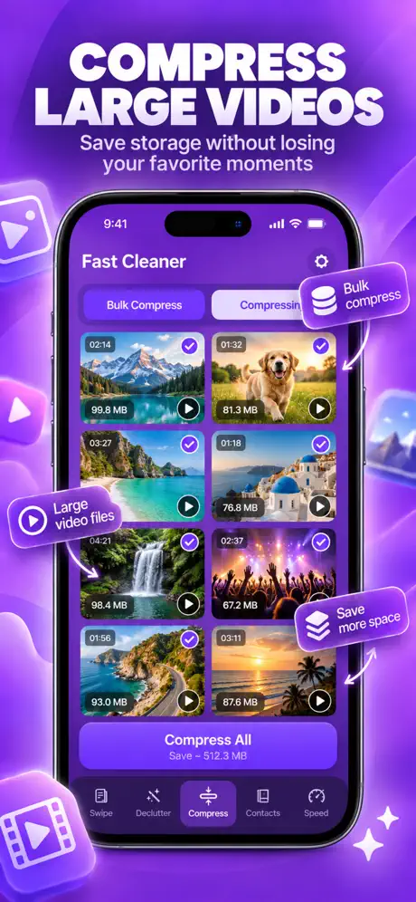

Can Fast Cleaner help make an iPhone video smaller?
Fast Cleaner offers video compression on iPhone. Export a copy, check fine detail and playback, then decide what to keep. Smaller files can involve a quality tradeoff; neither a fixed saving nor a visually identical result is guaranteed.
To make an existing iPhone video smaller, export a copy with settings suited to how you will use it, inspect the result, and then decide whether to keep the original. Lower resolution or bitrate can reduce file size, with a quality tradeoff. A useful result is one that still looks and works the way you need.
Before you start
Preserve a separate copy of an irreplaceable recording. A second device showing the same iCloud Photos library is not an independent backup: synced deletions can affect your other devices.

1. Check the original before choosing settings
Open the video in Photos and review its information, including duration, resolution, frame rate, and file size where shown. Decide whether it is a working original, a family archive, or a copy for sharing. Keep the original when future editing or maximum detail matters.
There is no single file size for “one minute of 4K.” Codec, bitrate, frame rate, HDR, recording mode, and the scene all matter. For arithmetic only, a hypothetical file using 400MB per minute would occupy 4GB over ten minutes. That is not a specification for every iPhone recording.
2. Export a smaller copy
In a video-compression app, select a short sample and inspect the export choices. With Fast Cleaner, use the available video-compression workflow and review the output before approving any removal. Controls and supported formats can vary by app version and platform.
- Resolution: reducing a 4K copy to 1080p reduces detail and may suit a smaller viewing screen.
- Frame rate: a lower frame rate changes motion; compare sports, pans, and fast-moving subjects carefully.
- Codec: Apple explains HEVC’s storage efficiency and compatibility limits. Re-encoding an already efficient file does not guarantee a useful reduction.
- Bitrate or quality: start conservatively and inspect faces, fine text, shadows, and motion before processing a batch.
Allow working space for an export. If storage is nearly exhausted, review unwanted downloads or move a verified copy to another location before attempting a large batch.
3. Compare quality and compatibility
- Play the exported copy from beginning to end and check audio, orientation, and duration.
- Inspect it on the screen or service where you intend to use it, including a TV or editing app if relevant.
- Check HDR appearance, resolution, frame rate, and any date or location metadata you need. Do not assume every export preserves them.
- Compare actual file sizes. If the reduction is small or the result is visibly worse, keep the original and reconsider the settings.
A worked example, not a typical result
If a 1,000MB original becomes a 700MB export, the file-size reduction is (1,000 − 700) ÷ 1,000 = 30%. Keeping both uses 1,700MB. The smaller export alone does not demonstrate recovered device storage.
4. Decide what to do with the original
Verify your separate archive before removing an original. Review the app’s deletion confirmation and understand the recovery collection. Permanently removing media trades away the recovery option; do not empty Recently Deleted automatically.
After your chosen cleanup, revisit Settings → General → iPhone Storage. For a warning that remains after removal, follow our after-deletion troubleshooting guide. Processing time and recovered space depend on the actual files and device.
5. Choose settings for future recordings
Open Settings → Camera → Record Video to inspect the options available on your phone. Use the resolution and frame rate needed for the recording. This changes future captures; it does not resize videos already in your library.
Under Settings → Camera → Formats, compatible devices offer High Efficiency capture. Check Apple’s format guidance before choosing between efficiency and compatibility. Menu options depend on the model and recording mode.
For a custom workflow, explore the Apple Shortcuts guide. Verify the available media actions on your version and test on a copy rather than relying on a universal export recipe.
Need a broader plan? Start with ten ways to review iPhone storage.
Frequently Asked Questions
Can I compress a video without losing quality?
The resizing and lower-bitrate exports discussed here trade some information for a smaller file. Whether you notice the change depends on the footage, settings, and display. Compare the output before removing an original.
How much space will compression recover?
There is no fixed percentage. Compare the original and exported file sizes, then check iPhone Storage after you decide what to keep. A small or already efficient video may offer little useful reduction.
Does exporting a smaller copy delete the original?
Exporting a copy and deleting an original are separate choices. Check the app’s confirmation flow and Recently Deleted rather than assuming the original disappears or storage changes immediately.
Can I use Apple’s tools?
Changing Camera recording settings affects future recordings. Apple’s Shortcuts app can also be used for media workflows, but its actions and controls depend on your software version. Test any workflow on a disposable copy first.
Want help reviewing your media?
Explore Fast Cleaner’s duplicate, similar-photo, and video tools. Check platform features and pricing before installing.
Fast Cleaner publishes this guide. Our privacy policy describes on-device media analysis and separate limited analytics. Product descriptions are developer statements; storage results depend on your files and choices.
Compress an existing video or change future recordings?
| Choice | What it changes | When to use it |
|---|---|---|
| Camera recording settings | Future recordings; not files already captured. | Choose a suitable resolution and frame rate before recording. |
| Fast Cleaner video compression | Exports a smaller copy of an existing video on supported iPhone versions. | You want to review a smaller version before replacing an original. |
| Keep or archive the original | Preserves the source file rather than re-encoding it. | You need editing flexibility or an irreplaceable full-quality source. |
Apple’s wording:
more broadly compatible.
Apple uses this description for older JPEG/H.264 formats. File size is only one choice: test the exported video in the app or device that will receive it.
Platform source: Apple — Using HEIF or HEVC media, checked November 21, 2026.

Where Fast Cleaner fits
Use Fast Cleaner to make a candidate smaller copy, then compare duration, speech, motion, text and dark areas against your retained original. Android users can review large videos in the Android app; do not assume every iPhone export option is available on Android.
Fast Cleaner’s privacy policy describes on-device media analysis with separate limited analytics. Compare Android and iPhone pricing.

Continue with Should I use Apple Photos or Fast Cleaner for duplicate photos?.
Reviewed November 21, 2026. Follow the linked Apple guidance for your software version. Menus and available features vary by device. Examples are illustrative, and no fixed cleanup result is promised.